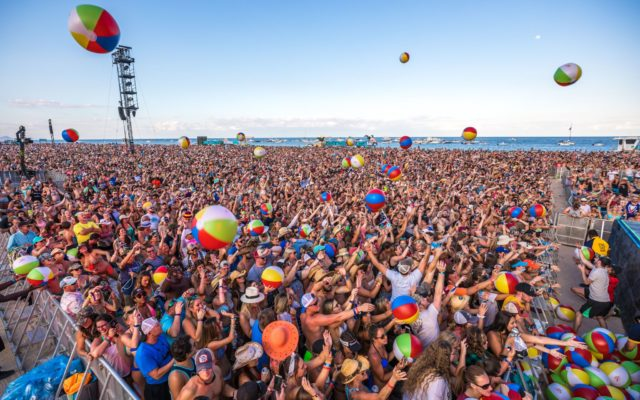
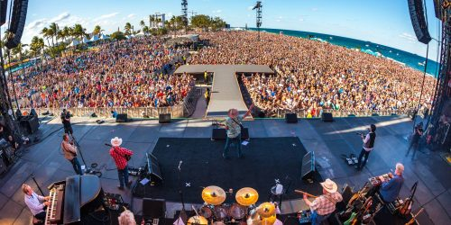

What is Tortuga Music Festival?

50 years ago, music festivals were born. It all started with Woodstock and then quickly became a life of its own. Music festivals rapidly became popular and more kept popping up. Seven years ago is when Tortuga Music Festival was born.
In April of 1972, The inagural year of Tortuga Music Festival took place the weekend of April 13-14, 2013. The festival is located on the Fort Lauderdale, FL beach and takes place the 2nd weekend in April. Sun kissed fans listen to live music all day and night long with their toes in the sand. The festival was started by Huka Entertainment and Rock the Ocean Foundation and is aimed at spreading knowledge for ocean conservation. In late 2017, it was bought out by Live Nation which is an entertainment company known for their festivals and concerts.
For country music fans this weekend was the best there was. After 3 years and the attendance tripling in size, it was extended for a 3rd day. As well as making the festival a third day, more acts than just country were added. Past headliners include Kenny Chesney, Eric Church, Luke Bryan and Florida Georgia Line. With attendees traveling from all over the country to come to Tortuga, it is one of the hottest tickets in South Florida and sells out each year.
As ticket prices rise from year to year, more entertainment comes with your money. With three stages stretching almost a mile on the beach, there is entertainment every minute of the 10 hour a day festival. Not only is it an incredible place where music fans alike are able to get together, over $500,000 has been raised going directly towards helping ocean conservation.
